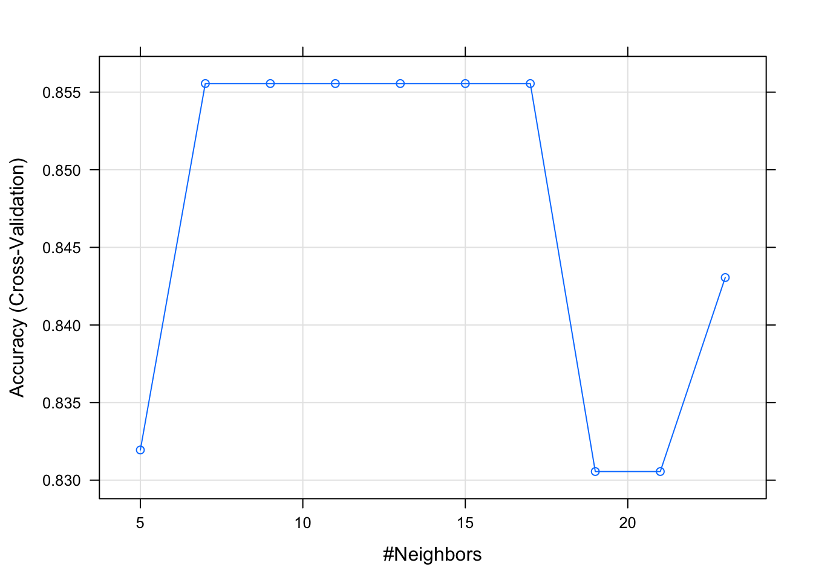

Chapter 7 KNN - K Nearest Neighbour
The KNN algorithm is a robust and versatile classifier that is often used as a benchmark for more complex classifiers such as Artificial Neural Networks (ANN) and Support Vector Machines (SVM). Despite its simplicity, KNN can outperform more powerful classifiers and is used in a variety of applications.
The KNN classifier is also a non parametric and instance-based learning algorithm.
Non-parametric means it makes no explicit assumptions about the functional form of h, avoiding the dangers of mismodeling the underlying distribution of the data. For example, suppose our data is highly non-Gaussian but the learning model we choose assumes a Gaussian form. In that case, our algorithm would make extremely poor predictions.
Instance-based learning means that our algorithm doesn’t explicitly learn a model (lazy learner). Instead, it chooses to memorize the training instances which are subsequently used as “knowledge” for the prediction phase. Concretely, this means that only when a query to our database is made (i.e. when we ask it to predict a label given an input), will the algorithm use the training instances to spit out an answer.
It is worth noting that the minimal training phase of KNN comes both at a memory cost, since we must store a potentially huge data set, as well as a computational cost during test time since classifying a given observation requires a run down of the whole data set. Practically speaking, this is undesirable since we usually want fast responses.
The principle behind KNN classifier (K-Nearest Neighbor) algorithm is to find K predefined number of training samples that are closest in the distance to a new point & predict a label for our new point using these samples.
When K is small, we are restraining the region of a given prediction and forcing our classifier to be “more blind” to the overall distribution. A small value for K provides the most flexible fit, which will have low bias but high variance. Graphically, our decision boundary will be more jagged.
KNN with k = 1
On the other hand, a higher K averages more voters in each prediction and hence is more resilient to outliers. Larger values of K will have smoother decision boundaries which means lower variance but increased bias.

KNN with k = 20
What we are observing here is that increasing k will decrease variance and increase bias. While decreasing k will increase variance and decrease bias. Take a look at how variable the predictions are for different data sets at low k. As k increases this variability is reduced. But if we increase k too much, then we no longer follow the true boundary line and we observe high bias. This is the nature of the Bias-Variance Tradeoff.
7.1 Example 1. Prostate Cancer dataset
library(tidyverse)
df <- read_csv("dataset/prostate_cancer.csv")
glimpse(df)## Observations: 100
## Variables: 10
## $ id <int> 1, 2, 3, 4, 5, 6, 7, 8, 9, 10, 11, 12, 13, 1...
## $ diagnosis_result <chr> "M", "B", "M", "M", "M", "B", "M", "M", "M",...
## $ radius <int> 23, 9, 21, 14, 9, 25, 16, 15, 19, 25, 24, 17...
## $ texture <int> 12, 13, 27, 16, 19, 25, 26, 18, 24, 11, 21, ...
## $ perimeter <int> 151, 133, 130, 78, 135, 83, 120, 90, 88, 84,...
## $ area <int> 954, 1326, 1203, 386, 1297, 477, 1040, 578, ...
## $ smoothness <dbl> 0.143, 0.143, 0.125, 0.070, 0.141, 0.128, 0....
## $ compactness <dbl> 0.278, 0.079, 0.160, 0.284, 0.133, 0.170, 0....
## $ symmetry <dbl> 0.242, 0.181, 0.207, 0.260, 0.181, 0.209, 0....
## $ fractal_dimension <dbl> 0.079, 0.057, 0.060, 0.097, 0.059, 0.076, 0....Change the diagnosis result into a factor, then remove the ID variable as it does not bring anything.
df$diagnosis_result <- factor(df$diagnosis_result, levels = c("B", "M"),
labels = c("Benign", "Malignant"))
df2 <- df %>% select(-id)
# Checking how balance is the dependend variable
prop.table(table(df2$diagnosis_result))##
## Benign Malignant
## 0.38 0.62It is quite typical of such medical dataset to be unbalanced. We’ll have to deal with it.
Like with PCA, KNN is quite sensitve to the scale of the variable. So it is important to first standardize the variables. This time we’ll do this using the preProcess funnction of the caret package.
library(caret)
param_preproc_df2 <- preProcess(df2[,2:9], method = c("scale", "center"))
df3_stdize <- predict(param_preproc_df2, df2[, 2:9])
summary(df3_stdize)## radius texture perimeter area
## Min. :-1.60891 Min. :-1.3923 Min. :-1.8914 Min. :-1.5667
## 1st Qu.:-0.99404 1st Qu.:-0.8146 1st Qu.:-0.6031 1st Qu.:-0.7073
## Median : 0.03074 Median :-0.1406 Median :-0.1174 Median :-0.1842
## Mean : 0.00000 Mean : 0.0000 Mean : 0.0000 Mean : 0.0000
## 3rd Qu.: 0.85057 3rd Qu.: 0.7741 3rd Qu.: 0.7379 3rd Qu.: 0.6697
## Max. : 1.67039 Max. : 1.6888 Max. : 3.1770 Max. : 3.6756
## smoothness compactness symmetry fractal_dimension
## Min. :-2.23539 Min. :-1.4507 Min. :-1.8896 Min. :-1.4342
## 1st Qu.:-0.63039 1st Qu.:-0.7556 1st Qu.:-0.6877 1st Qu.:-0.6981
## Median :-0.04986 Median :-0.1341 Median :-0.1030 Median :-0.2073
## Mean : 0.00000 Mean : 0.0000 Mean : 0.0000 Mean : 0.0000
## 3rd Qu.: 0.63312 3rd Qu.: 0.4956 3rd Qu.: 0.5142 3rd Qu.: 0.5288
## Max. : 2.75035 Max. : 3.5703 Max. : 3.6001 Max. : 3.9639We can now see that all means are centered around 0. Now we reconstruct our df with the response variable and we split the df into a training and testing set.
df3_stdize <- bind_cols(diagnosis = df2$diagnosis_result, df3_stdize)
param_split<- createDataPartition(df3_stdize$diagnosis, times = 1, p = 0.8,
list = FALSE)
train_df3 <- df3_stdize[param_split, ]
test_df3 <- df3_stdize[-param_split, ]
#We can check that we still have the same kind of split
prop.table(table(train_df3$diagnosis))##
## Benign Malignant
## 0.382716 0.617284Nice to see that the proportion of Malign vs Benin has been conserved.
We use KNN with cross-validation (discussed in more details in this section 10.3 to train our model.
trnctrl_df3 <- trainControl(method = "cv", number = 10)
model_knn_df3 <- train(diagnosis ~., data = train_df3, method = "knn",
trControl = trnctrl_df3,
tuneLength = 10)
model_knn_df3## k-Nearest Neighbors
##
## 81 samples
## 8 predictors
## 2 classes: 'Benign', 'Malignant'
##
## No pre-processing
## Resampling: Cross-Validated (10 fold)
## Summary of sample sizes: 73, 72, 73, 73, 73, 73, ...
## Resampling results across tuning parameters:
##
## k Accuracy Kappa
## 5 0.8402778 0.6306169
## 7 0.8402778 0.6339503
## 9 0.8527778 0.6724118
## 11 0.8652778 0.7053788
## 13 0.8277778 0.6257408
## 15 0.8277778 0.6192282
## 17 0.8277778 0.6192282
## 19 0.8041667 0.5852645
## 21 0.8041667 0.5688618
## 23 0.8277778 0.6089503
##
## Accuracy was used to select the optimal model using the largest value.
## The final value used for the model was k = 11.plot(model_knn_df3)
predict_knn_df3 <- predict(model_knn_df3, test_df3)
confusionMatrix(predict_knn_df3, test_df3$diagnosis, positive = "Malignant")## Confusion Matrix and Statistics
##
## Reference
## Prediction Benign Malignant
## Benign 3 0
## Malignant 4 12
##
## Accuracy : 0.7895
## 95% CI : (0.5443, 0.9395)
## No Information Rate : 0.6316
## P-Value [Acc > NIR] : 0.1149
##
## Kappa : 0.4865
## Mcnemar's Test P-Value : 0.1336
##
## Sensitivity : 1.0000
## Specificity : 0.4286
## Pos Pred Value : 0.7500
## Neg Pred Value : 1.0000
## Prevalence : 0.6316
## Detection Rate : 0.6316
## Detection Prevalence : 0.8421
## Balanced Accuracy : 0.7143
##
## 'Positive' Class : Malignant
## 7.2 Example 2. Wine dataset
We load the dataset and do some quick cleaning
df <- read_csv("dataset/Wine_UCI.csv", col_names = FALSE)
colnames(df) <- c("Origin", "Alcohol", "Malic_acid", "Ash", "Alkalinity_of_ash",
"Magnesium", "Total_phenols", "Flavanoids", "Nonflavonoids_phenols",
"Proanthocyanins", "Color_intensity", "Hue", "OD280_OD315_diluted_wines",
"Proline")
glimpse(df)## Observations: 178
## Variables: 14
## $ Origin <int> 1, 1, 1, 1, 1, 1, 1, 1, 1, 1, 1, 1, ...
## $ Alcohol <dbl> 14.23, 13.20, 13.16, 14.37, 13.24, 1...
## $ Malic_acid <dbl> 1.71, 1.78, 2.36, 1.95, 2.59, 1.76, ...
## $ Ash <dbl> 2.43, 2.14, 2.67, 2.50, 2.87, 2.45, ...
## $ Alkalinity_of_ash <dbl> 15.6, 11.2, 18.6, 16.8, 21.0, 15.2, ...
## $ Magnesium <int> 127, 100, 101, 113, 118, 112, 96, 12...
## $ Total_phenols <dbl> 2.80, 2.65, 2.80, 3.85, 2.80, 3.27, ...
## $ Flavanoids <dbl> 3.06, 2.76, 3.24, 3.49, 2.69, 3.39, ...
## $ Nonflavonoids_phenols <dbl> 0.28, 0.26, 0.30, 0.24, 0.39, 0.34, ...
## $ Proanthocyanins <dbl> 2.29, 1.28, 2.81, 2.18, 1.82, 1.97, ...
## $ Color_intensity <dbl> 5.64, 4.38, 5.68, 7.80, 4.32, 6.75, ...
## $ Hue <dbl> 1.04, 1.05, 1.03, 0.86, 1.04, 1.05, ...
## $ OD280_OD315_diluted_wines <dbl> 3.92, 3.40, 3.17, 3.45, 2.93, 2.85, ...
## $ Proline <int> 1065, 1050, 1185, 1480, 735, 1450, 1...The origin is our dependent variable. Let’s make it a factor.
df$Origin <- as.factor(df$Origin)
#Let's check our explained variable distribution of origin
round(prop.table(table(df$Origin)), 2)##
## 1 2 3
## 0.33 0.40 0.27That’s nice, our explained variable is almost equally distributed with the 3 set of origin.
# Let's also check if we have any NA values
summary(df)## Origin Alcohol Malic_acid Ash Alkalinity_of_ash
## 1:59 Min. :11.03 Min. :0.740 Min. :1.360 Min. :10.60
## 2:71 1st Qu.:12.36 1st Qu.:1.603 1st Qu.:2.210 1st Qu.:17.20
## 3:48 Median :13.05 Median :1.865 Median :2.360 Median :19.50
## Mean :13.00 Mean :2.336 Mean :2.367 Mean :19.49
## 3rd Qu.:13.68 3rd Qu.:3.083 3rd Qu.:2.558 3rd Qu.:21.50
## Max. :14.83 Max. :5.800 Max. :3.230 Max. :30.00
## Magnesium Total_phenols Flavanoids Nonflavonoids_phenols
## Min. : 70.00 Min. :0.980 Min. :0.340 Min. :0.1300
## 1st Qu.: 88.00 1st Qu.:1.742 1st Qu.:1.205 1st Qu.:0.2700
## Median : 98.00 Median :2.355 Median :2.135 Median :0.3400
## Mean : 99.74 Mean :2.295 Mean :2.029 Mean :0.3619
## 3rd Qu.:107.00 3rd Qu.:2.800 3rd Qu.:2.875 3rd Qu.:0.4375
## Max. :162.00 Max. :3.880 Max. :5.080 Max. :0.6600
## Proanthocyanins Color_intensity Hue
## Min. :0.410 Min. : 1.280 Min. :0.4800
## 1st Qu.:1.250 1st Qu.: 3.220 1st Qu.:0.7825
## Median :1.555 Median : 4.690 Median :0.9650
## Mean :1.591 Mean : 5.058 Mean :0.9574
## 3rd Qu.:1.950 3rd Qu.: 6.200 3rd Qu.:1.1200
## Max. :3.580 Max. :13.000 Max. :1.7100
## OD280_OD315_diluted_wines Proline
## Min. :1.270 Min. : 278.0
## 1st Qu.:1.938 1st Qu.: 500.5
## Median :2.780 Median : 673.5
## Mean :2.612 Mean : 746.9
## 3rd Qu.:3.170 3rd Qu.: 985.0
## Max. :4.000 Max. :1680.0Here we noticed that the range of values in our variable is quite wide. It means our data will need to be standardize. We also note that we no “NA” values. That’s quite a nice surprise!
7.2.1 Understand the data
We first slide our data in a training and testing set.
df2 <- df
param_split_df2 <- createDataPartition(df2$Origin, p = 0.75, list = FALSE)
train_df2 <- df2[param_split_df2, ]
test_df2 <- df2[-param_split_df2, ]The great with caret is we can standardize our data in the the training phase.
7.2.1.1 Model the data
Let’s keep using caret for our training.
trnctrl_df2 <- trainControl(method = "repeatedcv", number = 10, repeats = 3)
model_knn_df2 <- train(Origin ~., data = train_df2, method = "knn",
trControl = trnctrl_df2,
preProcess = c("center", "scale"),
tuneLength = 10)model_knn_df2## k-Nearest Neighbors
##
## 135 samples
## 13 predictors
## 3 classes: '1', '2', '3'
##
## Pre-processing: centered (13), scaled (13)
## Resampling: Cross-Validated (10 fold, repeated 3 times)
## Summary of sample sizes: 122, 120, 122, 121, 123, 120, ...
## Resampling results across tuning parameters:
##
## k Accuracy Kappa
## 5 0.9707204 0.9557271
## 7 0.9617521 0.9421631
## 9 0.9582357 0.9369469
## 11 0.9558852 0.9331935
## 13 0.9602198 0.9397512
## 15 0.9558303 0.9328821
## 17 0.9711172 0.9563882
## 19 0.9757204 0.9633610
## 21 0.9759035 0.9635787
## 23 0.9809035 0.9711285
##
## Accuracy was used to select the optimal model using the largest value.
## The final value used for the model was k = 23.plot(model_knn_df2)
Let’s use our model to make our prediction
prediction_knn_df2 <- predict(model_knn_df2, newdata = test_df2)
confusionMatrix(prediction_knn_df2, reference = test_df2$Origin)## Confusion Matrix and Statistics
##
## Reference
## Prediction 1 2 3
## 1 14 1 0
## 2 0 16 0
## 3 0 0 12
##
## Overall Statistics
##
## Accuracy : 0.9767
## 95% CI : (0.8771, 0.9994)
## No Information Rate : 0.3953
## P-Value [Acc > NIR] : 3.124e-16
##
## Kappa : 0.9648
## Mcnemar's Test P-Value : NA
##
## Statistics by Class:
##
## Class: 1 Class: 2 Class: 3
## Sensitivity 1.0000 0.9412 1.0000
## Specificity 0.9655 1.0000 1.0000
## Pos Pred Value 0.9333 1.0000 1.0000
## Neg Pred Value 1.0000 0.9630 1.0000
## Prevalence 0.3256 0.3953 0.2791
## Detection Rate 0.3256 0.3721 0.2791
## Detection Prevalence 0.3488 0.3721 0.2791
## Balanced Accuracy 0.9828 0.9706 1.0000